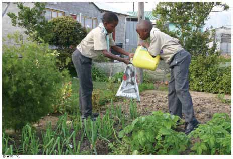

Cadenas Alimenticias y Sustancias Químicas

Finalidad 3
Reducir el riesgo de las sustancias nocivas sobre la gente y el medio ambiente.
Objetivos Educativos: Ser conscientes de las sustancias nocivas en el medio ambiente local e identificar su origen. Demostrar qué acciones personales pueden tomarse para reducir el riesgo de sustancias naturales sobre las personas y el ambiente en general.Rango de edades: Tropa
Resumen: Un juego para exponer cómo los químicos agrícolas se infiltran dentro de la cadena alimenticia.
Objetivo: Mostrar cómo los químicos usados en la agricultura se transfieren a los sistemas ecológicos, y por qué esto es nocivo para el medio ambiente.
Materiales: Tarjetas con diferentes elementos de una cadena alimenticia común (por ejemplo, grama, conejo, zorro, etc.).
Nota: Debe haber muchas más tarjetas con los elementos de los niveles inferiores en la cadena alimenticia y sólo una o dos cada uno de los elementos en los niveles superiores. También disponga de algún tipo de tarjetas de cualquier color (una para cada uno de los miembros al principio de la cadena alimenticia).
Preparación: Arregle las tarjetas de la cadena. Elija cadena alimenticia que sería afectada por pesticidas agrícolas y si es posible, que sea relevante en su área local. Algunas ideas están propuestas en la sección Recursos. Las tarjetas deben poder ser portadas por los Scouts, por ejemplo, pueden ser enganchadas al uniforme o colgadas con una cuerda alrededor del cuello.
Duración: 30 minutos a 1 hora
Localización: Lugar de reuniones Scouts.
Fundamentos: La vida sobre la tierra depende del sol. El sol provee energía que las plantas usan para crecer y entonces proveer alimento a otros organismos.
Muchos animales se alimentan sólo de plantas (herbívoros), muchos animales sólo se alimentan de otros animales (carnívoros) y algunos consumen tanto plantas como animales (omnívoros). A pesar de estas diferencias en la dieta, la realidad es que todos los animales dependen de las plantas para alimentarse a través de una relación entre plantas y animales llamada cadena alimenticia.
Lo zorros comen conejos, los conejos comen grama. Un halcón come una lagartija, ésta come un grillo, y éste último come grama.
En el océano, los peces comen crustáceos pequeños (como los camarones), los cuales comen organismos microscópicos llamados plancton. El plancton es un minúsculo organismo que vive en el océano y está clasificado en fitoplancton y zooplancton. El fitoplancton usa la energía de la luz solar para crear alimento a través de un proceso llamado 'fotosíntesis'..
Ejemplos de cadena alimenticia:
Grama > Grillo > Lagartija > HalcónFitoplancton > Zooplancton > Camarón > Pez > Tiburón
Cactus > Insectos > Lagartija > Serpiente > Halcón
Árboles > Insectos > Mono > Leopardo
Los organismos al principio de una cadena alimenticia son usualmente muy numerosos mientras que, los animales al final son a menudo grandes y reducidos en número. Es raro que los depredadores de un nivel alto coman a otros depredadores también de nivel alto. Las cadenas alimenticias son usualmente complicadas la mayoría de los animales consumen varios tipos de comida.
Por ejemplo, un zorro puede comer conejos, ratones y escarabajos. En realidad, la cadena alimenticia sería una red alimenticia. Una cadena puede ser perturbada por la acción del hombre. Esta actividad se enfoca en el impacto de los químicos usados en la agricultura sobre las cadenas alimenticias.
Comúnmente, los cultivos agrícolas son rociados con químicos llamados pesticidas. Estos destruyen a los insectos, hongos y plantas que pueden dañar o competir con el cultivo.
Los pesticidas alteran la cadena alimenticia principalmente de dos modos. Primero, al remover los organismos. La mayoría de estos pesticidas matan a los organismos inofensivos o beneficiosos al mismo tiempo que eliminan los dañinos. Si una planta o animal es removido de una cadena alimenticia, entonces los animales de niveles más altos son afectados.
Segundo, al introducir químicos venenosos y duraderos a la cadena alimenticia. Algunos de estos químicos permanecen largos períodos antes de perder su efecto. Una vez consumidos, las sustancias químicas permanecen en el cuerpo de los animales y cuando el animal es devorado, la sustancia se transfiere al cuerpo del depredador. La concentración de sustancias químicas en cada animal se incrementa a medida que escala en la cadena.
En bajas concentraciones, las sustancias pueden ser inofensivas para los animales más grandes, pero como resultado de ser transmitidas a través de la cadena alimenticia, su concentración podría ser incrementada lo suficiente para causar enfermedad o muerte.
Guía paso a paso de la actividad
1. Presente el tema de la cadena alimenticia. Haga preguntas a los Scouts para determinar qué saben sobre la cadena alimenticia. ¿Qué cadenas alimenticias existen en su medio ambiente local? ¿Qué cadenas de otros ambientes conocen? Elija una variedad de ejemplos, tales como, el océano, a un bosque llovioso tropical, el desierto.2. Entregue a cada Scout varios pedazos largos de cuerda y una tarjeta de la cadena alimenticia. Deben usar la tarjeta de modo que sea visible para otros Scouts.
Explique la actividad. Lo que harán será crear la cadena alimenticia. Las tarjetas muestran los distintos elementos que conforman una cadena alimenticia.
Deberán buscar diferentes plantas y animales y pensar lo que sus respectivas criaturas comerían o por quién serían devoradas.
Cuando consigan algo que comer deberán conectarse a tal criatura con un pedazo de cuerda. Deben colocar el pedazo de cuerda sobre el suelo.
El resultado será una cadena que muestra una clara sucesión de varias plantas en la base hasta un depredador superior al final; con algunos animales que estarán conectados a más de una criatura. Pida a los Scouts explicar la cadena ¿Es una cadena o red alimenticia? De hecho, esta actividad producirá a una red alimenticia, lo cual es una imagen más realista de lo que de verdad sucede en la naturaleza.
3. La siguiente actividad es marcando puntos (para esto son las tarjetas de color).
La meta es atrapar a la presa. Comience dejando que las plantas calienten un poco corriendo alrededor (antes de esto, deberá haber entregado a cada planta una tarjeta de color, la cual representará un punto).
Suelte a los herbívoros para que atrapen a las plantas. Al atrapar una planta, el herbívoro recibe un punto y la planta debe sentarse en el suelo.
Después de unos pocos minutos, deje que los carnívoros empiecen a jugar. Al atrapar a un herbívoro, automáticamente el carnívoro obtiene los puntos de éste. El ganador del juego es el carnívoro que tenga más puntos al finalizar.
Esto podría parecer injusto para las plantas y los herbívoros, pero la situación cambiará en el próximo juego cuando las sustancias químicas sean introducidas en la cadena alimenticia.
4. Repita el juego, pero esta vez entregue una tarjeta de color a todos a todos lo jugadores que representan el peldaño más bajo de la cadena (las plantas verdes).
Esto significa que han sido rociadas con un pesticida y la tarjeta de color representa la sustancia química.
Al ser atrapados, deberán entregar la tarjeta y sentarse en el suelo. Al finalizar el juego, pida a cada carnívoro contar cuántas tarjetas de color ha recolectado. Evaluación
1. Las tarjetas de color representan a los pesticidas que han sidorociados sobre las plantas para asegurar el éxito de la cosecha. El agricultor no quiere que las enfermedades, insectos u otras plantasafecten sus cosechas. Discutir cómo las acciones del agricultor hanafectado el medio ambiente. Puede usar las siguientes preguntas pararealizar la discusión: ¿Cuáles animales terminaron con mayor cantidadde tarjetas de color? ¿Si las tarjetas representan sustancias químicasdañinas, entonces, es bueno o malo tener muchas de ellas? ¿Qué efectotienen las sustancias químicas en los diferentes animales? ¿De quémanera ha ayudado el sistema de cadena alimenticia a incrementar laconcentración de sustancias químicas? ¿Cuáles propiedades de lassustancias químicas han causado que esto ocurra?
2. Motive a los Scouts a pensar en por qué los pesticidas fueron usadosy cuáles alternativas están disponibles. Puede usar las siguientespreguntas para realizar la discusión: ¿Creen que el agricultor dejaríade usar pesticidas si supiera el daño que estos causan en la cadenaalimenticia? ¿Cómo podría el agricultor proteger sus cosechas de laspestes, enfermedades y otras plantas sin usar pesticidas dañinos?
3. ¿Cuál es el grado de conciencia de los Scouts respecto a lospesticidas en el medio ambiente local? Puede usar las siguientespreguntas para realizar la discusión: ¿Qué cosechas se cultivan a nivellocal, regional o nacional? ¿Saben si los pesticidas son usados a nivellocal, regional o nacional? ¿Alguno ha escuchado de problemas causadospor el uso de pesticidas? ¿Creen que los problemas de los pesticidasson bien publicitados? ¿De qué manera pueden los pesticidas afectar alos seres humanos? ¿Qué puede hacer cada persona para reducir el riesgode los pesticidas en el ambiente?
Actividades avanzadas
1. Averiguar cómo se cultivan los alimentos a nivel local. ¿Puedenencontrar de alimentos cultivados orgánicamente? ¿Hay lugares en losque se cultive usando sustancias químicas? ¿Cuáles son usadas y porqué? Averiguar alternativas a los pesticidas.
2. Descubrir cuáles animales en la localidad son depredadores de nivelsuperior en la cadena alimenticia. ¿Creen que puedan ser afectados porlas sustancias químicas en el ambiente?
3. Cultivar sus propios alimentos usando métodos orgánicos.
© World Scout Bureau
Rue du Pré-Jérôme 5
PO Box 91
1211 Geneva 4 Plainpalais
Switzerland
Tel.: (+ 41 22) 705 10 10
Fax: (+ 41 22) 705 10 20
worldbureau@scout.org
scout.org
Reproduction is authorized to National Scout
Organizations and Associations which are
members of the World Organization of the Scouts
Rue du Pré-Jérôme 5
PO Box 91
1211 Geneva 4 Plainpalais
Switzerland
Tel.: (+ 41 22) 705 10 10
Fax: (+ 41 22) 705 10 20
worldbureau@scout.org
scout.org
Reproduction is authorized to National Scout
Organizations and Associations which are
members of the World Organization of the Scouts